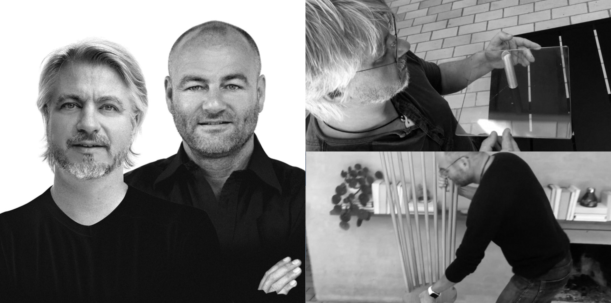

With more than 300 awards and distinctions Tools Design, by the Danish designers Claus Jensen and Henrik Holbæk, is probably the most award-winning design studio in Europe when it comes to lifestyle design used within household goods.
Their products are characterized by a simplistic and innovative approach with a design philosophy of adding something extra to each product. For example, Eva Solo's accessories and kitchenware collection that for many years has been designed by Tools Design, as well as the innovative bicycle helmets for the company Yakkay.
Our founding philosophy is to produce something that appeals to people in its own special way – giving something extra, without adding anything unnecessary. As a part of our approach to design we draw on nomadism – meaning to wander, to always be ready to move and to do so happily. Therefore our creations are designed to fit into different settings and be moved easily and they will be noted throughout the interior as spots that bring comfort and joy into our daily lives.